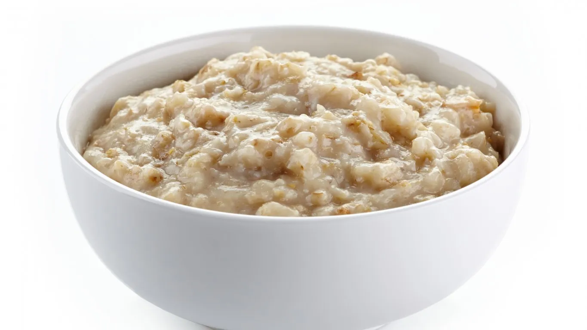

Oatmeal

Description
Start your day with a warm bowl of a breakfast classic. This simple oatmeal recipe is the perfect option for those wanting a quick and satisfying breakfast.
Ingredients
- 1/2 cup of rolled oats
- 3/4 cup of water
- 1/4 cup of milk
- Salt
- Cinnamon
- Honey
Steps
- Add 1/2 cup of rolled oats into a microwave-safe bowl
- Add 3/4 cup of water and 1/4 cup of milk into bowl
- Add a pinch of salt
- Microwave on high for 1 minute and 45 seconds
- Add cinnamon and honey to taste
- Enjoy!
Home